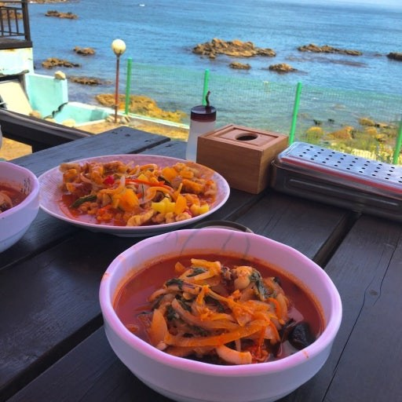
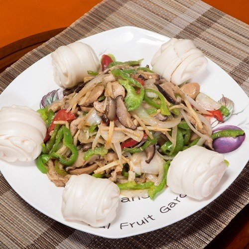
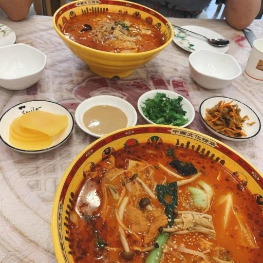
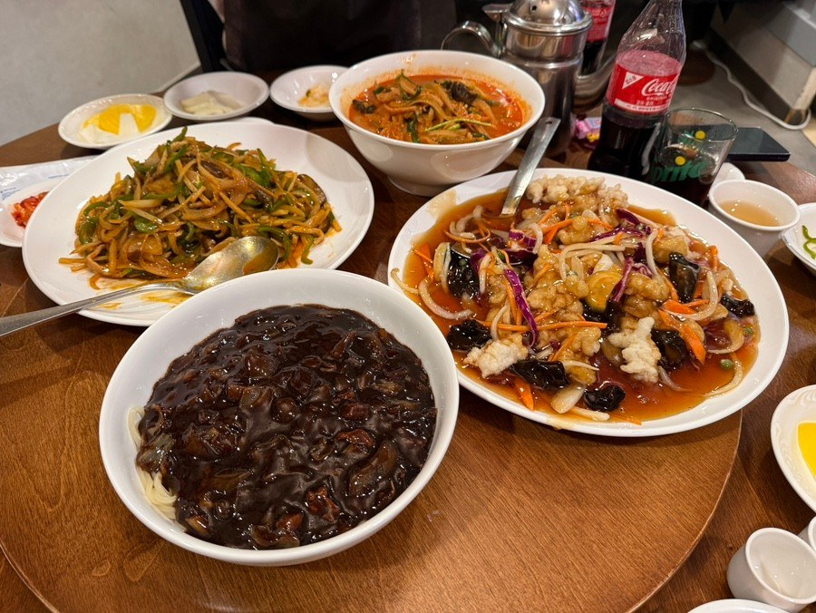
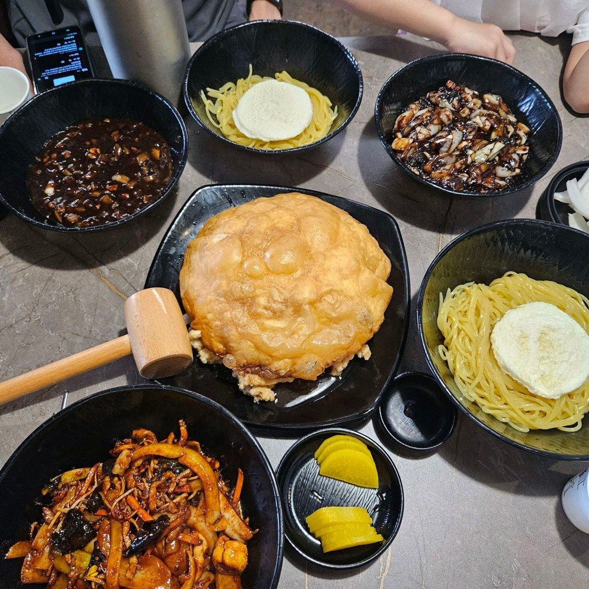

🥟 중식 맛집
중식 맛집
짜장면, 짬뽕, 탕수육 등 포항의 중식 맛집을 모았습니다.

간짜장 · 노포
해동반점
현지인 추천 분위기의 간짜장과 중식 메뉴를 맛볼 수 있는 곳입니다.
📍 경북 포항시 남구 중앙로92번길 6
★★★★★4.7리뷰 보기 →

중식 · 해도동
중국집 포항점
짬뽕과 쟁반짜장 등 기본에 충실한 중식 메뉴를 찾기 좋은 식당입니다.
📍 경북 포항시 남구 중앙로 75 1층
★★★★★4.6리뷰 보기 →

중식 · 죽도동
동원성
죽도동에서 오래된 중식당 분위기를 느낄 수 있는 곳입니다.
📍 경북 포항시 북구 중흥로 224
★★★★★4.6리뷰 보기 →

중식 · 대이동
동북인가
가성비 좋은 식사와 모임에 어울리는 중식 선택지입니다.
📍 경북 포항시 남구 대이로111번길 6
★★★★★4.6리뷰 보기 →

중식 · 상도동
부산각 상도점
상도동에서 짜장면과 탕수육을 찾을 때 가기 좋은 중식집입니다.
📍 경북 포항시 남구 희망대로 751
★★★★★4.6리뷰 보기 →

중식 · 가족식사
진차이
가족 식사나 모임에도 어울리는 깔끔한 중식 맛집입니다.
📍 경북 포항시 북구 대곡로 57
★★★★★4.8리뷰 보기 →